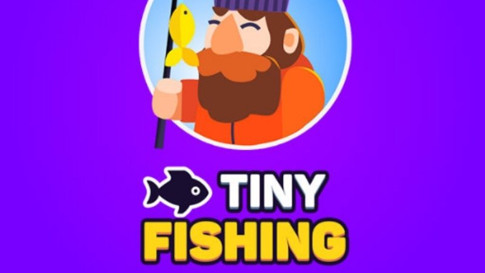

Simülasyon
Tiny Fishing
Tiny Fishing, oltanızı göle bırakarak farklı balıkları yakaladığınız rahatlatıcı ve eğlenceli bir balık tutma oyunudur. Kazandığınız paralarla oltanızı geliştirebilir ve daha nadir balıkları yakalayabilirsiniz.
🎮 Hemen Oyna